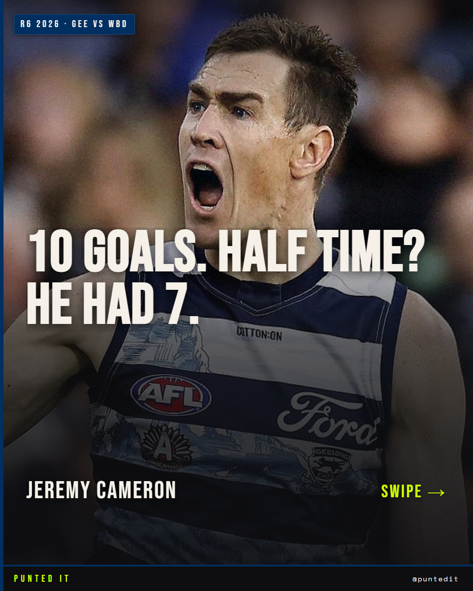

Punted It
AFL stories, told in numbers.
A home for the data work behind the brand — Instagram carousels that turn a stat line into a story, and deep-dive club reports. Pick a lane below.
Browse the work
6 carousels

Instagram · @puntedit
Social Media
Hand-built carousels — Gunston, Pendlebury, Freo's streak and more. Swipe through every slide.
Open the gallery →Data report
Hawthorn 2026 Report
A full offline data deep-dive on the Hawks' 2026 season — charts, tables and narrative in one document.
Read the report →